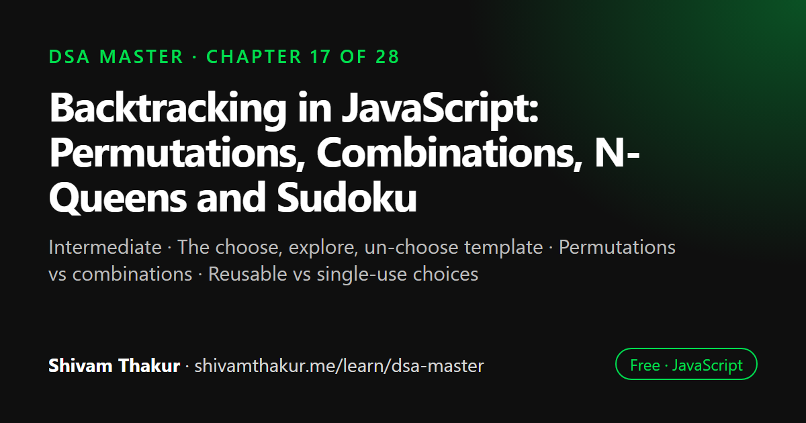

Chapter 17 of 28 · Intermediate
Backtracking in JavaScript: Permutations, Combinations, N-Queens and Sudoku
The Backtracking Masterclass

Backtracking builds a solution one choice at a time and undoes the last choice as soon as it cannot lead to a valid answer. Every backtracking algorithm follows the same choose, explore and un-choose template over a decision tree. This chapter applies that template to permutations, combinations, combination sum, N-Queens, Sudoku and word search, with pruning to cut the search.
In this chapter you will learn
- The choose, explore, un-choose template
- Permutations vs combinations
- Reusable vs single-use choices
- Pruning the search tree
- Grid backtracking: N-Queens, Sudoku, Word Search
17.0 Formalizing What We've Been Previewing Since Chapter 2
We first met backtracking in Chapter 2, section 2.8.3 (subset generation) with the mantra "choose, explore, un-choose." Chapter 10 previewed it again pruning a trie-guided grid search. This chapter promotes that rhythm from "a neat trick shown once" to a complete, systematic framework — the single technique responsible for solving nearly every "generate all X" or "find a valid arrangement satisfying constraints" problem you'll ever encounter.
17.1 The Formal Model: A Decision Tree With Pruning
Definition: Backtracking is a refinement of brute-force recursive search that builds candidate solutions incrementally, abandoning ("backtracking" out of) any partial candidate as soon as it can be determined that it cannot possibly lead to a valid, complete solution.
ASCII Visualization: The Decision Tree
Generating all subsets of {1, 2}: at each element, CHOOSE to include it or not.
[]
/ \
exclude 1 include 1
/ \
[] [1]
/ \ / \
exclude 2 include 2 exclude 2 include 2
/ \ / \
[] [2] [1] [1,2]
Every LEAF of this tree is one complete, valid output. The tree itself
IS the recursion; each level = one decision; each path root-to-leaf = one subset.The Three-Part Anatomy of Every Backtracking Function
Every backtracking solution in this chapter shares an identical skeleton, worth memorizing as a template you can reproduce under pressure:
function backtrack(pathSoFar, remainingChoices, results) {
if (isCompleteSolution(pathSoFar)) { // BASE CASE: a full candidate has been built
results.push([...pathSoFar]); // ALWAYS COPY — Chapter 2's critical lesson, revisited!
return;
}
for (const choice of getValidChoicesAt(pathSoFar, remainingChoices)) {
pathSoFar.push(choice); // CHOOSE
backtrack(pathSoFar, remainingChoices, results); // EXPLORE
pathSoFar.pop(); // UN-CHOOSE (the "backtrack" step itself)
}
}17.2 Permutations: Choosing Order, Not Just Membership
The problem: given an array of distinct numbers, generate all possible orderings (permutations).
Intuition: The Decision at Each Level Is "Which Unused Element Goes Here Next?"
Unlike subsets (where each level asks "include this specific element or not"), permutations ask "which of the remaining unused elements should occupy this next position?" — a genuinely different branching structure, worth explicitly contrasting.
function permute(nums) {
const results = [];
function backtrack(pathSoFar, used) {
if (pathSoFar.length === nums.length) {
results.push([...pathSoFar]); // copy!
return;
}
for (let i = 0; i < nums.length; i++) {
if (used[i]) continue; // this element is already placed somewhere in pathSoFar — skip it
used[i] = true; // CHOOSE
pathSoFar.push(nums[i]);
backtrack(pathSoFar, used); // EXPLORE
pathSoFar.pop(); // UN-CHOOSE
used[i] = false;
}
}
backtrack([], new Array(nums.length).fill(false));
return results;
}
console.log(permute([1, 2, 3]));
// [[1,2,3],[1,3,2],[2,1,3],[2,3,1],[3,1,2],[3,2,1]]Dry Run (Abbreviated, First Branch Only)
backtrack([], [F,F,F]):
i=0 (nums[0]=1): not used. used=[T,F,F], path=[1]
backtrack([1], [T,F,F]):
i=0: used, skip.
i=1 (nums[1]=2): not used. used=[T,T,F], path=[1,2]
backtrack([1,2], [T,T,F]):
i=0,1: used, skip. i=2 (nums[2]=3): not used. used=[T,T,T], path=[1,2,3]
backtrack([1,2,3],...): length===3 -> results.push([1,2,3]) <- FIRST RESULT!
UNDO: path=[1,2], used=[T,T,F]
UNDO: path=[1], used=[T,F,F]
i=2 (nums[2]=3): not used. used=[T,F,T], path=[1,3]
... (eventually produces [1,3,2]) ...
UNDO: path=[], used=[F,F,F]
i=1 (nums[1]=2): not used. ... (produces [2,1,3] and [2,3,1]) ...
i=2 (nums[2]=3): not used. ... (produces [3,1,2] and [3,2,1]) ...17.3 Combinations: Choosing a Fixed-Size Subset
The problem: given n and k, generate all combinations of k numbers chosen from 1 to n.
function combine(n, k) {
const results = [];
function backtrack(start, pathSoFar) {
if (pathSoFar.length === k) {
results.push([...pathSoFar]);
return;
}
// PRUNING: if there aren't enough remaining numbers to reach length k, stop early!
for (let i = start; i <= n - (k - pathSoFar.length) + 1; i++) {
pathSoFar.push(i);
backtrack(i + 1, pathSoFar); // i+1, NOT start+1 — never reuse or go backward!
pathSoFar.pop();
}
}
backtrack(1, []);
return results;
}
console.log(combine(4, 2));
// [[1,2],[1,3],[1,4],[2,3],[2,4],[3,4]]17.4 The N-Queens Problem: Backtracking With Real Constraint Checking
The problem: place N queens on an N×N chessboard such that no two queens threaten each other (no two share a row, column, or diagonal).
function solveNQueens(n) {
const results = [];
const columns = new Set();
const diagonals = new Set(); // row - col is constant along one diagonal direction
const antiDiagonals = new Set(); // row + col is constant along the OTHER diagonal direction
function backtrack(row, board) {
if (row === n) {
results.push([...board]);
return;
}
for (let col = 0; col < n; col++) {
if (columns.has(col) || diagonals.has(row - col) || antiDiagonals.has(row + col)) {
continue; // PRUNING: this position is under attack, don't even try it
}
// CHOOSE
columns.add(col);
diagonals.add(row - col);
antiDiagonals.add(row + col);
board.push('.'.repeat(col) + 'Q' + '.'.repeat(n - col - 1));
backtrack(row + 1, board); // EXPLORE
// UN-CHOOSE
columns.delete(col);
diagonals.delete(row - col);
antiDiagonals.delete(row + col);
board.pop();
}
}
backtrack(0, []);
return results;
}17.5 Sudoku Solver: Backtracking on a Grid With Multiple Simultaneous Constraints
function solveSudoku(board) {
function isValid(row, col, num) {
for (let i = 0; i < 9; i++) {
if (board[row][i] === num) return false; // row constraint
if (board[i][col] === num) return false; // column constraint
const boxRow = 3 * Math.floor(row / 3) + Math.floor(i / 3);
const boxCol = 3 * Math.floor(col / 3) + (i % 3);
if (board[boxRow][boxCol] === num) return false; // 3x3 box constraint
}
return true;
}
function backtrack() {
for (let row = 0; row < 9; row++) {
for (let col = 0; col < 9; col++) {
if (board[row][col] !== '.') continue; // already filled — move on
for (let num = 1; num <= 9; num++) {
const numStr = String(num);
if (isValid(row, col, numStr)) {
board[row][col] = numStr; // CHOOSE
if (backtrack()) return true; // EXPLORE — if this leads to a full solution, propagate success!
board[row][col] = '.'; // UN-CHOOSE
}
}
return false; // no valid number worked for this cell — this WHOLE PATH fails, backtrack further up!
}
}
return true; // no empty cells left — the board is completely, validly filled!
}
backtrack();
return board;
}17.6 Combination Sum: Backtracking With Reusable Choices
The problem: given an array of candidate numbers (possibly reused unlimited times) and a target, find all unique combinations that sum to the target.
function combinationSum(candidates, target) {
const results = [];
const sorted = [...candidates].sort((a, b) => a - b); // sorting enables an important pruning trick below
function backtrack(start, remaining, pathSoFar) {
if (remaining === 0) {
results.push([...pathSoFar]);
return;
}
for (let i = start; i < sorted.length; i++) {
if (sorted[i] > remaining) break; // PRUNING: since sorted ascending, everything after is ALSO too big!
pathSoFar.push(sorted[i]);
backtrack(i, remaining - sorted[i], pathSoFar); // NOTE: `i`, not `i+1` — REUSE is allowed!
pathSoFar.pop();
}
}
backtrack(0, target, []);
return results;
}
console.log(combinationSum([2, 3, 6, 7], 7)); // [[2,2,3],[7]]17.7 Word Search: Backtracking on a Grid (Closing the Loop With Chapter 10's Trie Preview)
The problem: given a 2D grid of letters and a word, determine if the word can be constructed from letters of sequentially adjacent cells.
function exist(board, word) {
const rows = board.length;
const cols = board[0].length;
function backtrack(row, col, index) {
if (index === word.length) return true; // matched every character — success!
if (
row < 0 || row >= rows || col < 0 || col >= cols ||
board[row][col] !== word[index]
) {
return false; // out of bounds, or this cell doesn't match the needed character
}
const temp = board[row][col];
board[row][col] = '#'; // CHOOSE: mark as visited (avoid reusing the same cell in this path)
const found = (
backtrack(row + 1, col, index + 1) ||
backtrack(row - 1, col, index + 1) ||
backtrack(row, col + 1, index + 1) ||
backtrack(row, col - 1, index + 1)
); // EXPLORE all 4 directions
board[row][col] = temp; // UN-CHOOSE: restore the original character for other search paths
return found;
}
for (let row = 0; row < rows; row++) {
for (let col = 0; col < cols; col++) {
if (backtrack(row, col, 0)) return true;
}
}
return false;
}17.8 Edge Cases and Gotchas Checklist for Backtracking Problems
- Forgetting to copy the result (
[...pathSoFar]) — the single most common bug in this entire chapter, worth its own permanent mental red flag. - Forgetting the "un-choose" step entirely, or un-choosing in the wrong order relative to other state changes (always undo in the exact reverse order you applied changes).
- Combinations vs. permutations confusion — always ask "does order matter?" before choosing between the
start/i+1technique and theused[]array technique. - Reuse vs. no-reuse confusion —
ivs.i+1in the recursive call is the entire distinction; verify explicitly which the problem requires. - Duplicate-skipping logic applied incorrectly — the
nums[i] === nums[i-1] && !used[i-1](or equivalenti > startguard for combination-style duplicates) condition is subtle; always dry-run on a small duplicate-containing example before trusting it. - "Find all" vs. "find one" confusion — decide explicitly whether your function should return a boolean and stop early on success, or continue exhaustively collecting every result.
- Missing or incorrect pruning — a backtracking solution that's correct but doesn't prune impossible branches early can be dramatically, sometimes unusably, slower than one that does; always ask "can I detect failure earlier?"
- In-place grid mutation without restoration (Word Search-style problems) — always verify the "un-choose" step restores the exact original state.
17.9 Chapter Summary
This chapter formalized the "choose, explore, un-choose" rhythm first previewed in Chapter 2 into a complete, systematic framework, anchored by a reusable three-part function skeleton: a base case that records a complete solution (always via a defensive copy — the single most common bug in all of backtracking), a loop over valid next choices, and the choose/recurse/un-choose sequence around each one. We built genuine muscle memory by working through the canonical problem families side by side specifically to sharpen the boundaries between them: permutations (branching on "which unused element goes next," using a used[] tracking array, O(n·n!) by the honest factorial-counting argument) versus combinations (branching on "include this element or skip it, never looking backward," using the start/i+1 non-reuse technique) — with "does order matter?" as the single decisive question separating the two, and a shared, transferable "sort first, then skip adjacent duplicates under a specific used/unused condition" recipe for handling duplicate input values in either family.
We stepped up to genuine constraint-based backtracking with N-Queens, where the pruning mechanism (O(1) diagonal/column attack detection via Sets tracking row-col and row+col) is the actual substance of the solution, not an afterthought — establishing "what's the earliest point at which a partial solution is detectably doomed, and how cheaply can I check that?" as the central strategic question for any new backtracking problem. We used the Sudoku solver to introduce a fundamental structural fork worth internalizing before writing any backtracking code: "find all solutions" (populate a results array, keep exploring after every success) versus "find one solution" (return a boolean, propagate success immediately upward, stop exploring the moment success is achieved) — genuinely different control-flow shapes for genuinely different problem requirements.
We covered Combination Sum's reusable-choice variant, isolating the single-character (i vs. i+1) difference that separates "each choice usable once" from "each choice usable unlimited times," alongside the break-vs-continue pruning distinction that only becomes valid once the input is sorted ascending. Finally, Word Search closed the loop with Chapter 10's trie preview and demonstrated the space-efficient technique of marking visited cells via temporary in-place mutation (with careful restoration during un-choose) rather than maintaining a separate visited-tracking structure — the same core rhythm, applied to grid-based exploration, that every problem in this chapter has now demonstrated in a genuinely different guise.
17.10 Revision Notes
- Every backtracking function shares the choose/explore/un-choose skeleton; always copy (
[...pathSoFar]) when recording a result — the most common bug in the entire technique. - Permutations (order matters,
used[]array) vs. combinations (order doesn't matter,start/i+1non-reuse) — "does order matter?" is the decisive question. - Duplicate-input handling recipe: sort first, then skip
nums[i] === nums[i-1]under a specific used/unused (ori > start) guard — transferable across permutations, combinations, and combination sum. - N-Queens demonstrates that real pruning (early, cheap detection of doomed partial solutions) is the actual substance of effective backtracking, not decoration.
- "Find all solutions" (results array, keep exploring) vs. "find one solution" (boolean return, stop immediately on success) is a fundamental structural fork — decide explicitly before coding.
- Combination Sum's
ivs.i+1in the recursive call is the single-character distinction between "usable once" and "usable unlimited times";break(notcontinue) is a valid pruning optimization only once input is sorted ascending. - Word Search demonstrates marking visited cells via temporary in-place mutation (with restoration on un-choose) as a zero-extra-memory alternative to a separate visited-tracking structure.
17.11 Mind Map (ASCII)
BACKTRACKING MASTERCLASS
|
+------------------+----------+----------+-----------------------+
| | | |
CORE SKELETON PERMUTATIONS vs REAL PRUNING FIND-ALL vs
(Ch.2 formalized) COMBINATIONS (N-QUEENS) FIND-ONE
| | | |
choose/explore/ "Does ORDER O(1) attack check Results array,
un-choose matter?" via row-col/row+col keep exploring
| PERMUTATIONS: Set tracking vs
ALWAYS COPY used[] array (Ch.4 callback) Boolean return,
on result! O(n * n!) | STOP on success
(#1 bug) | "Prune as early |
| COMBINATIONS: as possible" = Sudoku: "find
Skip-duplicates start/i+1, the actual ONE" pattern
recipe: SORT non-reuse STRATEGY, not |
first, then | decoration COMBINATION SUM:
nums[i]==nums[i-1] Shared duplicate- i vs i+1 =
&& !used[i-1] skip recipe REUSE vs no-reuse
guard (single char!)
|
WORD SEARCH:
in-place mutation
as visited-tracking
(mark '#', explore,
RESTORE on un-choose)
-- closes loop w/
Ch.10 trie preview17.12 Cheat Sheet
BACKTRACKING SKELETON
========================
function backtrack(pathSoFar, ...) {
if (isComplete(pathSoFar)) {
results.push([...pathSoFar]); // ALWAYS COPY!
return; // (or: return true; for find-ONE variants)
}
for (choice of validChoices) {
pathSoFar.push(choice); // CHOOSE
backtrack(pathSoFar, ...); // EXPLORE
pathSoFar.pop(); // UN-CHOOSE
}
}
DECISION TABLE
==================
"Does order matter?" YES -> Permutations (used[] array)
NO -> Combinations (start/i+1, no backward reuse)
"Can elements repeat?" YES -> pass `i` (not i+1) to recursive call
NO -> pass `i+1`
"Duplicates in input?" Sort first, skip nums[i]==nums[i-1] && !used[i-1]
"Find ALL solutions?" results array, function returns void, keep exploring
"Find ONE solution?" return boolean, propagate true immediately, stop early
PRUNING CHECKLIST (ask this for EVERY backtracking problem)
================================================================
"What's the earliest point I can detect this partial path is DOOMED?"
"Can I check that cheaply (O(1) via a Set/tracked value), rather than scanning?"
"If input is sorted, can I `break` instead of `continue` once a threshold is crossed?"
SPACE-EFFICIENT VISITED TRACKING
====================================
Instead of a separate visited Set/array: mutate the input IN PLACE as "choose"
(e.g., board[r][c] = '#'), then RESTORE the original value as "un-choose".
Zero extra memory, but MUST restore correctly or corrupt later search paths.17.13 Key Takeaways
- Every backtracking solution shares one skeleton: choose, explore, un-choose — and always copies results, never pushes a live mutable reference.
- "Does order matter?" separates permutations (used[] array) from combinations (start/i+1 non-reuse) — know both techniques and when each applies.
- A single character (
ivsi+1) distinguishes "each choice usable once" from "usable unlimited times" (Combination Sum). - Real backtracking effectiveness comes from pruning — detecting doomed partial solutions as early and cheaply as possible (N-Queens' O(1) diagonal tracking is the model).
- "Find all" (results array, keep exploring) versus "find one" (boolean return, stop on success) is a fundamental structural fork to decide before writing code.
17.14 20 Multiple Choice Questions
Tap an answer to check it. Your score updates as you go.
Score: 0 / 0 answered (20 questions)
What are the three core steps of every backtracking function?
What is the single most common bug in backtracking implementations?
What question determines whether a problem needs permutations or combinations?
What technique tracks which elements have been used in a permutation generation?
What technique prevents combinations from including the same element twice or considering reordered duplicates?
What is the time complexity of generating all permutations of n distinct elements?
What is the standard recipe for skipping duplicate results when the input contains duplicate values?
In N-Queens, what enables O(1) diagonal attack detection?
What is the central strategic question to ask for any new backtracking problem, according to this chapter?
What is the key structural difference between "find all solutions" and "find one solution" backtracking?
In the Sudoku solver, why does the function return a boolean rather than populate a results array?
In Combination Sum, what single-character change allows elements to be reused unlimited times?
Why is
break(notcontinue) valid as a pruning optimization in Combination Sum's loop?What technique does the Word Search problem use to track visited cells without extra memory?
What must always happen after temporarily mutating a grid cell for visited-tracking in backtracking?
What does the diagonal
row - colrepresent geometrically on a chessboard?What does the diagonal
row + colrepresent geometrically on a chessboard?Why is copying the result (
[...pathSoFar]) necessary before pushing to a results array?What is the relationship between Word Search (this chapter) and Word Search II (previewed in Chapter 10)?
What should you verify before trusting a backtracking solution involving duplicate-skipping logic?
Show the answer key
1-b, 2-b, 3-b, 4-b, 5-b, 6-c, 7-b, 8-b, 9-b, 10-b, 11-b, 12-a, 13-b, 14-b, 15-b, 16-b, 17-a, 18-b, 19-b, 20-b
17.15 20 Coding Problems
Easy
- Implement subset generation from memory, referencing Chapter 2's original version (section 2.8.3).
- Implement
permute(all permutations of distinct elements) from memory (section 17.2). - Implement
combine(n, k)from memory (section 17.3). - Write a function to generate all binary strings of length n using backtracking.
- Write a function to generate all valid combinations of well-formed parentheses for n pairs (a direct callback to Chapter 2's coding problem #13).
Medium
- Implement
permuteUnique(permutations with duplicate handling) from memory (section 17.2), and verify it produces no duplicate results on an input with repeated values. - Implement
solveNQueensfrom memory (section 17.4), and verify the count of solutions matches known values for small n (e.g., n=4 has 2 solutions, n=8 has 92). - Implement
combinationSumfrom memory (section 17.6), and separately implementcombinationSum2(each number usable at most once, with duplicate-skipping) — compare the two implementations directly. - Implement
exist(Word Search) from memory (section 17.7). - Given a string, generate all possible letter-case permutations (e.g., "a1b" -> "a1b", "a1B", "A1b", "A1B").
Hard
- Implement a Sudoku solver from memory (section 17.5), testing it on a real, solvable 9x9 puzzle.
- Given a string, partition it into all possible groupings such that every substring in each grouping is a palindrome.
- Implement the full Word Search II solution (Chapter 10 preview, fully realized here): given a grid and a list of words, find all words that can be constructed, using a trie combined with this chapter's grid backtracking technique.
- Given a set of distinct integers, generate all possible subsets, then extend to handle a set WITH duplicates, producing only unique subsets (applying this chapter's duplicate-skipping recipe to subset generation specifically).
- Implement a generalized "abbreviation" backtracking solution: given a word, generate all possible abbreviations (e.g., "word" -> "word", "1ord", "w1rd", "wo1d", "wor1", "2rd", "w2d", "wo2", "1o1d", ... etc.), a genuinely tricky combinatorial generation problem.
Interview Level
- (Google-level) Given a phone number's digits (2-9), generate all possible letter combinations the number could represent (the classic "Letter Combinations of a Phone Number" problem), using backtracking over a digit-to-letters mapping.
- (Amazon-level) Given a list of workers and a list of tasks with constraints (some workers can't do some tasks), use backtracking to find a valid complete assignment of workers to tasks, or determine none exists, framing it explicitly as a "find one solution" (boolean-returning) backtracking problem.
- (Microsoft-level) Given a matrix representing a maze with some cells blocked, use backtracking to find ALL distinct paths from top-left to bottom-right (moving only right or down), and separately, find just ONE valid path efficiently, contrasting the two backtracking structures explicitly.
- (Meta-level) Given a list of friend group size constraints for a social event, use backtracking to partition a list of attendees into valid groups satisfying all size constraints, exploring the search space efficiently with early pruning when a partial partition already violates a constraint.
- (Netflix-level) Design a content scheduling backtracking solution: given a list of shows with runtime constraints and a total available broadcast time slot, find all valid combinations of shows that exactly fill the available time (a direct, real-world-framed variant of Combination Sum), discussing in comments how the "find all" vs. "find one" distinction would change if you only needed to confirm feasibility rather than enumerate every option.
17.16 5 Interview Questions
- "Implement a function to generate all permutations of an array, and tell me its time complexity." (Tests the core technique and the honest O(n·n!) complexity claim.)
- "How would you generate all permutations if the input array contains duplicates?" (Tests the sort-then-skip-duplicates recipe specifically.)
- "Walk me through your pruning strategy for N-Queens — how do you avoid checking every possible board configuration?" (Tests understanding that pruning IS the substance of effective backtracking.)
- "If I only need to find ONE valid solution rather than all of them, how does your backtracking function change?" (Tests the find-all vs. find-one structural fork.)
- "How would you track visited cells in a grid-based backtracking search without using extra memory?" (Tests the in-place-mutation-and-restore technique from Word Search.)
17.17 3 Real Projects
- Complete Backtracking Problem Set Solver: Implement subsets, permutations (with and without duplicates), combinations, combination sum (with and without reuse), N-Queens, and a Sudoku solver in a single library, with a self-check script verifying correctness (including exact expected counts for small N-Queens cases and no-duplicate-results checks for the duplicate-handling variants).
- N-Queens Visualizer: Build a Node.js CLI tool that solves N-Queens for a given board size and prints each solution as an ASCII chessboard, along with the total solution count, empirically verifying against known values (n=4→2, n=8→92, etc.).
- Word Search Game Solver: Build a tool that takes a letter grid and a list of target words, uses the trie-plus-backtracking technique from section 17.7 (extended per Chapter 10's Word Search II preview) to find all constructible words, and reports each word's exact path through the grid.
17.18 Further Reading
- Steven Skiena, The Algorithm Design Manual, chapter on backtracking, for additional real-world combinatorial search framing and war stories.
- Search "N-Queens problem history" for the puzzle's origins (first posed in 1848) and its enduring role as a benchmark for constraint-satisfaction algorithms.
- LeetCode's "Backtracking" problem tag, for extensive additional practice directly extending every technique in this chapter.
- Donald Knuth's work on "Dancing Links" (the DLX algorithm), for an advanced, highly optimized approach to exact-cover problems like Sudoku and N-Queens, worth knowing exists as a specialized alternative to straightforward backtracking.
Backtracking Algorithms in JavaScript: frequently asked questions
What is backtracking in simple terms?
Backtracking tries a choice, explores everything that follows from it, then undoes the choice and tries the next one. It systematically explores all candidate solutions while abandoning a path as soon as it cannot succeed.
What is the difference between backtracking and recursion?
Recursion is the mechanism of a function calling itself. Backtracking is a search strategy built on recursion that makes a choice, recurses, and then explicitly reverses the choice before trying the next alternative.
How do you generate permutations vs combinations?
For permutations, order matters, so each call may pick any unused element, tracked with a used array. For combinations, order does not matter, so each call only picks elements after a start index, which prevents duplicates.
How can backtracking be made faster?
By pruning: detect partial solutions that cannot succeed and stop exploring them early. In N-Queens, tracking used columns and diagonals in sets makes each safety check O(1) and removes most of the search tree.